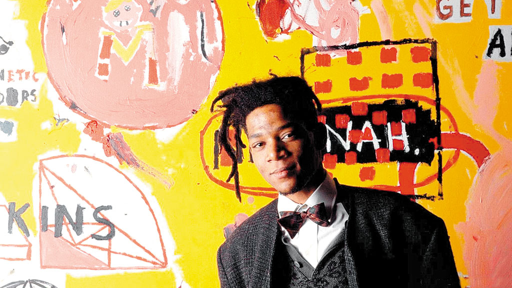

Jean Michel Basquiat
Basquiat foi um pintor neoexpressionista e grafiteiro norte-americano.

Suas artes eram carregadas por temas musicais, literários, políticos e sociais.
Basquiat foi primeiro afro-americano a fazer sucesso internacional nas artes
plásticas

Baquiat teve uma curta e platônica carreira, faleceu com apenas 27 anos.
Apesar da sua breve carreira, sua obra segue atual e influente.